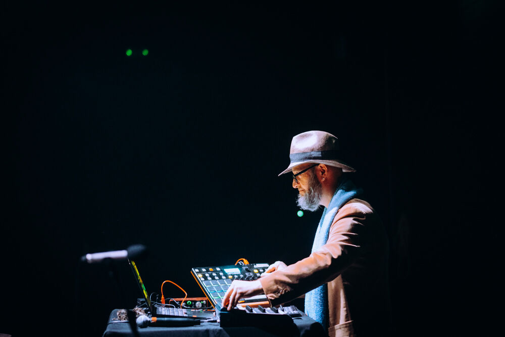

Noise Wrangler


Jean-Philippe Drecourt is a sound artist based in Portugal, working primarily in electroacoustic composition and live improvised performance. His practice explores the intersection of field recording, digital sound manipulation, and experimental music technologies.
Through the Noise Wrangler project, Drecourt creates immersive sonic explorations that blur the boundaries between environmental sound, musical composition, and digital art. His work often incorporates sounds captured from urban and natural environments, transformed through innovative processing techniques into new musical narratives.
Recent performances and projects have taken place across Portugal and internationally, engaging with contemporary sound art communities and experimental music venues. His practice continues to evolve through ongoing research into sound synthesis, spatial audio, and the poetic potential of everyday acoustic environments.